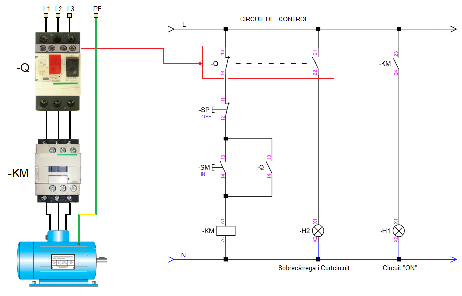

Arrancada Directa
Com el seu propi nom indica, el motor es connecta directament a la xarxa elèctrica utilitzant la connexió estrella o triangle. Normalment el responsable de la connexió entre el motor i la xarxa és un contactor tripolar de classe AC3 , governat per un circuit de comandament o control.
El motor està protegit contra curtcircuits per un Seccionador amb fusibles o un interruptor magneto-tèrmic de corba D i contra sobrecàrregues per un relé tèrmic. També podem utilitzar un disjuntor o interruptor de motor que fa la doble funció de protecció contra curtcircuits i contra sobrecàrregues (Veure figura).

Aquest mètode d'arrancada tan sols es podrà utilitzar en motors d'inducció que complisquen:
- P<0'75Kw
- P>075KW on la relació Ia/In no supere el valors establerts en la taula de la ICT-BT-47
Llicenciat sota la Llicència Creative Commons Reconeixement CompartirIgual 4.0